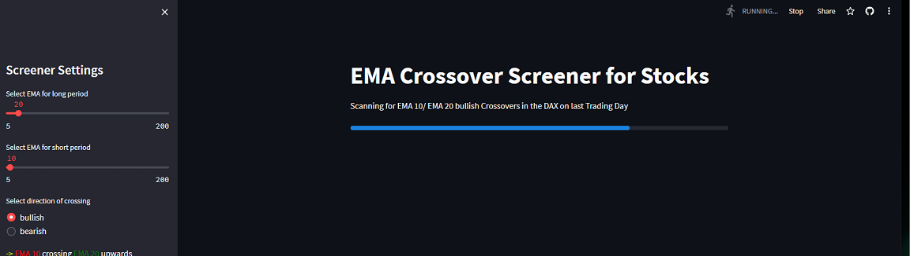

Stock Screener for EMA Crossings
Pandas Streamlit Yfinance Plotly Datetime
A simple stockscreener for crossings of exponential moving averages occurring in selectable markets on the last trading day.
It can be selected if the shorter time period EMA should cross the longer upwards (bullish) or downwards (bearish),
The data gets pulled from Yfinance and then is cached in streamlit. It will be stored in a pandas dataframe. Afterwards the Sidebar Settings get applied and the EMAs will be calculated.
Then - if any matches - the graph will either be plotted with plotly (DAX) or the graphs from finviz are generated dynamically by URL with the referring EMAs in it.
I personally like the finviz charts, unfortunately its lacking many german ticker symbols so i had to plot them for the DAX.